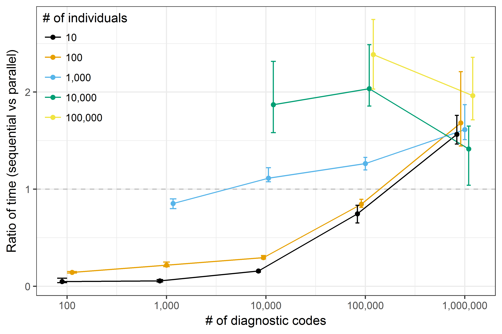

comorbidity: An R package for computing comorbidity scores
Repository link »
PDF link »
View review issue »

Published: 29 March 2018
Gasparini, (2018). comorbidity: An R package for computing comorbidity scores. Journal of Open Source Software, 3(23), 648. https://doi.org/10.21105/joss.00648
Summary
Comorbidity scores are extensively used in observational medical research studies to avoid potential bias when the burden of disease could be confounding the association of interest. This is of primary importance, given the increasing availability and use of administrative data (such as medical records and insurance claims) for research purposes. Several comorbidity scores have been proposed throughout the years; however, two of them are used most frequently in practice: the Charlson comorbidity index (Charlson et al. 1987) and the Elixhauser comorbidity index (Elixhauser et al. 1998). The Charlson comorbidity index defines a set of comorbid conditions using International Classification of Disease (ICD) diagnostic codes. Each comorbid condition has an associated weight, and the sum of all weights results in a single comorbidity score per patient. The current version of the Charlson score includes 17 comorbidities. Similarly, the Elixhauser comorbidity index is based on ICD diagnostic codes and includes 31 comorbidities. In origin, the Elixhauser index score was based on the cumulative number of conditions present; since then, several weighting systems accounting for the increase or decrease in mortality risk associated with each condition have been proposed and used in practice (van Walraven et al. 2009; Moore et al. 2017).
comorbidity is an R package that allows computing comorbidity scores in an easy and straightforward way. comorbidity is available from the Comprehensive R Archive Network (CRAN) and from GitHub at https://github.com/ellessenne/comorbidity. The main function of the package is named comorbidity as the package. It allows estimating any of the supported scores, which can be selected via the score argument. Currently, the Charlson comorbidity score and the Elixhauser comorbidity score are supported, using either the ICD-9-CM or the ICD-10 coding system. The implementation is based on the coding algorithms published by Quan et al. in 2005 (Quan et al. 2005). The weighting system implemented for the Charlson score is based on the original paper by Charlson et al. (Charlson et al. 1987); conversely, we implemented the weighting system proposed by Moore et al. for the Elixhauser score (Moore et al. 2017). Given that the version of the Elixhauser score studied by Moore et al. only included 29 comorbid conditions, we applied weights from van Walraven et al. for the remaining domains (van Walraven et al. 2009). We also categorise each comorbidity score following work by Menendez et al. (Menendez et al. 2014).
Internally, each comorbidity score is coded separately and called by the comorbidity function. This provides two benefits: it makes it easy to maintain the package, and it makes it trivial to implement new scores in the future. Finally, computing comorbidity scores can be time-consuming with large datasets (both in terms of number of patients and diagnostic codes). Parallel computing is supported out of the box to mitigate this potential problem, with no additional programming required by the user: it is sufficient to set the argument parallel = TRUE when calling comorbidity. All processing cores available on a machine are used by default, but it is possible to manually set how many cores to use via the mc.cores argument. The advantage in terms of computational speed can be significant, especially with large dataset: the parallel implementation is approximately twice as fast for datasets with 100,000 individuals and 1,000,000 diagnostic codes (Figure 1, timed using a laptop with a dual-core i5-6300U processor and 8 GB of RAM).
 Figure 1: comparison of sequential vs parallel implementation of comorbidity on a laptop with a dual-core i5-6300U processor and 8 GB of RAM. Each data point represents the average ratio over a set of 10 replications; the vertical bars represent the minimum and the maximum ratio.
References
Charlson, Mary E, Peter Pompei, Kathy L Ales, and C Ronald MacKenzie. 1987. “A New Method of Classifying Prognostic Comorbidity in Longitudinal Studies: Development and Validation.” Journal of Chronic Diseases 40 (5):373–83. https://doi.org/10.1016/0021-9681(87)90171-8.
Elixhauser, Anne, Claudia Steiner, D Robert Harris, and Rosanna M Coffey. 1998. “Comorbidity Measures for Use with Administrative Data.” Medical Care 36 (1):8–27. https://doi.org/10.1097/00005650-199801000-00004.
Menendez, Mariano E, Valentin Neuhaus, C Niek van Dijk, and David Ring. 2014. “The Elixhauser Comorbidity Method Outperforms the Charlson Index in Predicting Inpatient Death After Orthopaedic Surgery.” Clinical Orthopaedics and Related Research 472 (9):2878–86. https://doi.org/10.1007/s11999-014-3686-7.
Moore, Brian J, Susan White, Raynard Washington, Natalia Coenen, and Anne Elixhauser. 2017. “Identifying Increased Risk of Readmission and in-Hospital Mortality Using Hospital Administrative Data: The AHRQ Elixhauser Comorbidity Index.” Medical Care 55 (7):698–705. https://doi.org/10.1097/mlr.0000000000000735.
Quan, Hude, Vijaya Sundararajan, Patricia Halfon, Andrew Fong, Bernard Burnand, Jean-Christophe Luthi, L Duncan Saunders, Cynthia A Beck, Thomas E Feasby, and William A Ghali. 2005. “Coding Algorithms for Defining Comorbidities in ICD-9-CM and ICD-10 Administrative Data.” Medical Care 43 (11):1130–9. https://doi.org/10.1097/01.mlr.0000182534.19832.83.
van Walraven, Carl, Peter C Austin, Alison Jennings, Hude Quan, and Alan J Forster. 2009. “A Modification of the Elixhauser Comorbidity Measures into a Point System for Hospital Death Using Administrative Data.” Medical Care 47 (6):626–33. https://doi.org/10.1097/mlr.0b013e31819432e5.